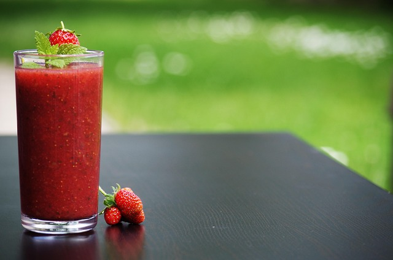

Smoothie

Description
A refreshing and healthy smoothie recipe that's perfect for breakfast or a quick snack. Packed with fruits and optional greens, it's a delicious way to start your day.
Ingredients
- 1 cup frozen mixed berries (strawberries, blueberries, raspberries)
- 1 banana
- 1/2 cup Greek yogurt (or any yogurt of your choice)
- 1/2 cup orange juice (or any juice of your choice)
- 1 tablespoon honey or maple syrup (optional, for added sweetness)
- 1/2 cup spinach or kale (optional, for added greens)
- Ice cubes (optional, for a thicker smoothie)
Steps
- In a blender, combine the frozen mixed berries, banana, Greek yogurt, and orange juice.
- If you're using honey or maple syrup, add it to the blender for extra sweetness.
- If you want to add greens, include the spinach or kale at this stage.
- Blend on high speed until all the ingredients are well combined and the smoothie is smooth and creamy. If the smoothie is too thick, you can add a little more juice or water to reach your desired consistency.
- If you prefer a colder smoothie, you can add a few ice cubes and blend again until smooth.
- Pour the smoothie into a glass and enjoy immediately. You can also garnish with a few fresh berries or a slice of banana on top for an extra touch.
Home